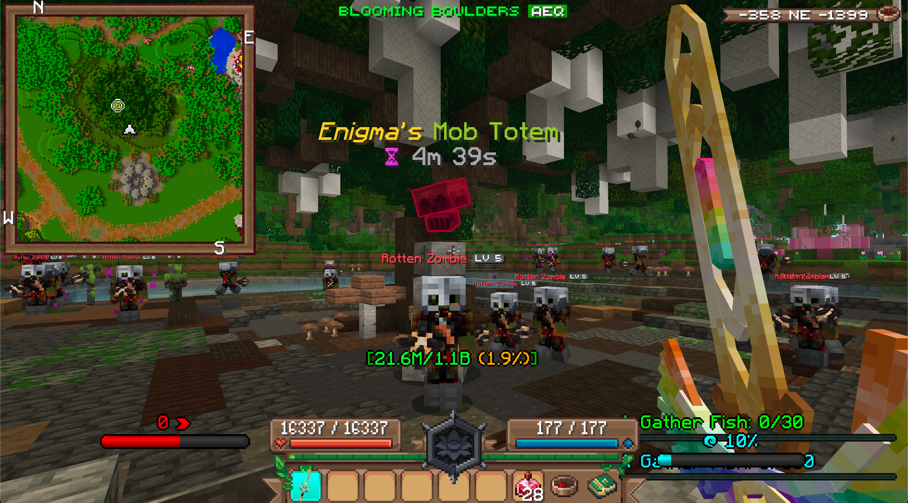
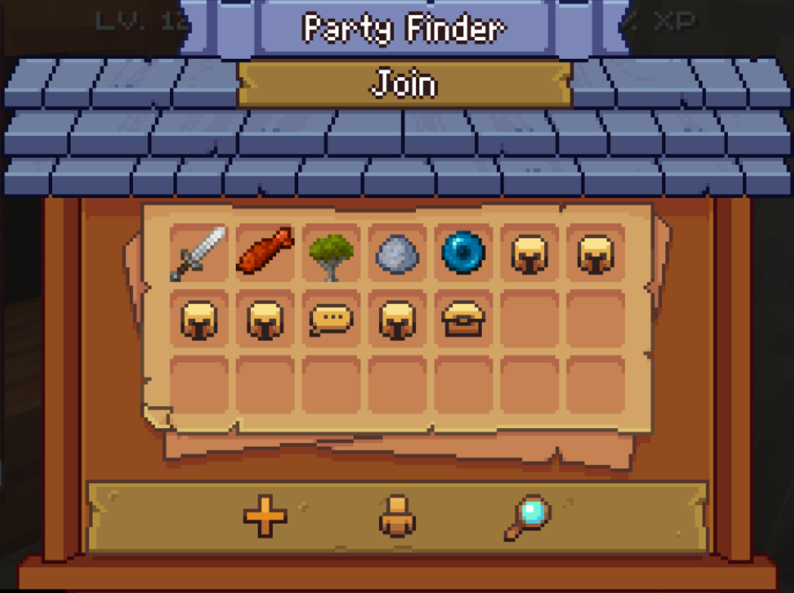
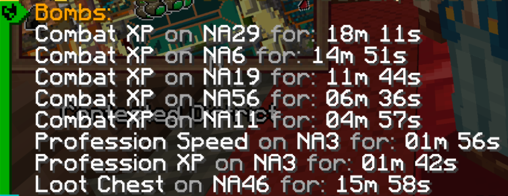

Unfortunately, these bombs must be bought with real money. Thankfully, everybody on the world can benefit from bombs thrown!
Wynncraft is a massive MMORPG, all inside of Minecraft. It has hours and hours of content... but sometimes, once you've already seen
that content, you don't want to see it again.
Speedleveling is the process of grinding out mobs in order to level up a class to the max rapidly. It is also called power leveling.
Knowing how to properly speedlevel can be difficult! So, this guide has been assembled in order to help you understand what to do.
In this guide, we'll go over proper equipment, where to go, and what archetypes to choose. This page will go over the general information
you need to speedlevel; links to the more specific things I just listed can be found at the top of this page.
The essence of speedleveling is very simple. It goes as such:
It's as simple as that!
Speedleveling isn't easy. It's time-consuming, boring, and can be - and more importantly, feel - slow. Grindspots can easily kill you if you aren't prepared,
and proper equipment is nearly mandatory to speed up the process.
Most importantly, however, are Mob Totems.

Parties are groups of up to 10 players. Alongside other things, such as xp being shared, their primary purpose is to gather multiple
groups of players in the same world, in the same spot, to do the same thing.
The immediate benefit of this is that the extra mobs from mob totems won't be as dangerous, as they will be killed almost immediately from the
huge amount of players that are attacking them.
Additionally, parties often contain players who are healers. This makes it so that you do not need to bring healing potions or other methods of healing,
as you will be healed by the players nearby.
It is very easy to find parties on the Party Finder.

Occasionally, people will throw bombs, which commonly last for 20 minutes.
These bombs have effects such as increasing loot gain, making gathering profession materials faster, or - most important for our purposes - doubling all xp gain.
Unfortunately, these bombs must be bought with real money. Thankfully, everybody on the world can benefit from bombs thrown!

And that's everything you need to know! The rest of this guide will go into far more in-depth knowledge, but from here, you can grind effectively.
Happy grinding!